Live on the Spectrum Next
The Z80 reader sends a key over the emulated UART. A host gateway fetches the linked HTTPS page and returns text for the guest to draw.


These VICE captures show pages fetched from yestersites.com. The guest sends a key over emulated SwiftLink. A workstation gateway requests the linked HTTPS page and sends its text to the guest.
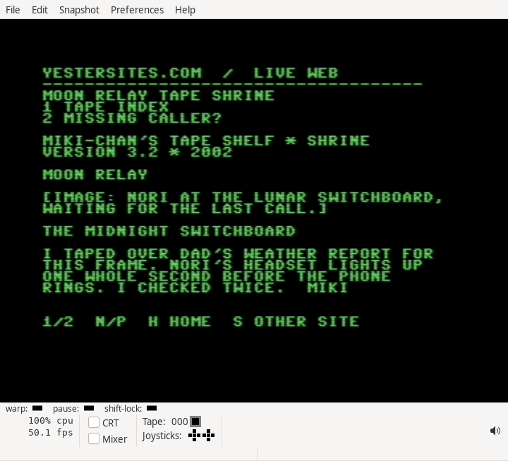
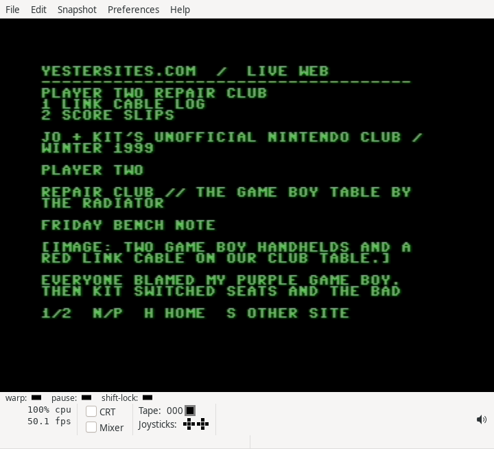
Read Moon Relay on the web · Read Player Two on the web
The YesterSites reader runs on the LionsArmor Wi-Fi emulator. It requests the HTML at yestersites.com through the emulated TexElec card, extracts text and links on the X16, and follows links when you press a number. Press S to switch sites.
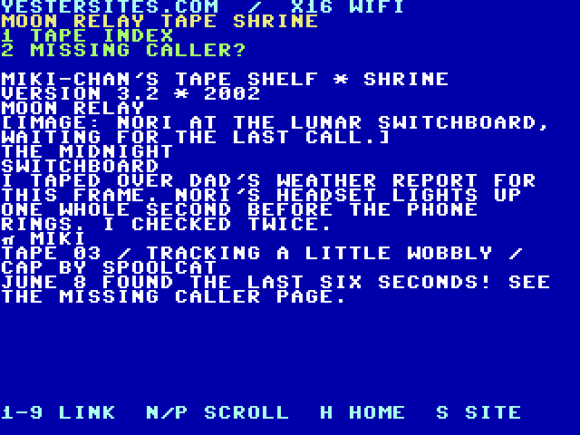
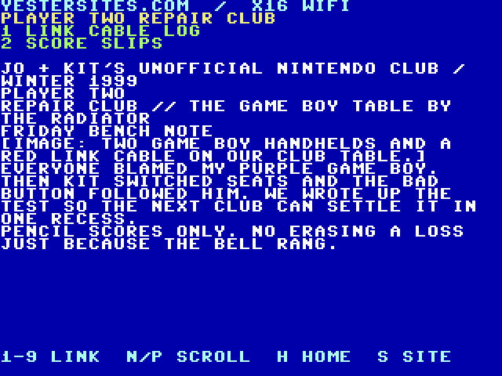
The Z80 reader sends a key over the emulated UART. A host gateway fetches the linked HTTPS page and returns text for the guest to draw.
The Z80 reader writes a request through an emulated DivMMC file interface. A workstation gateway fetches the page and returns its text through that interface.
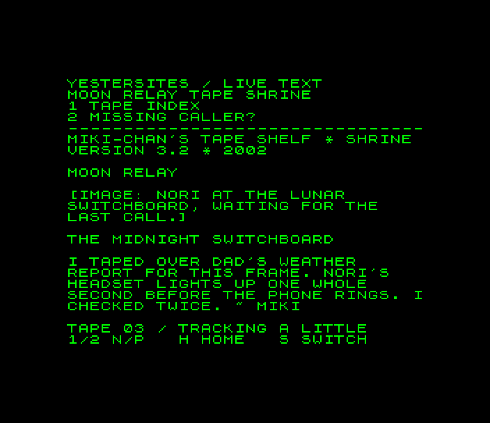
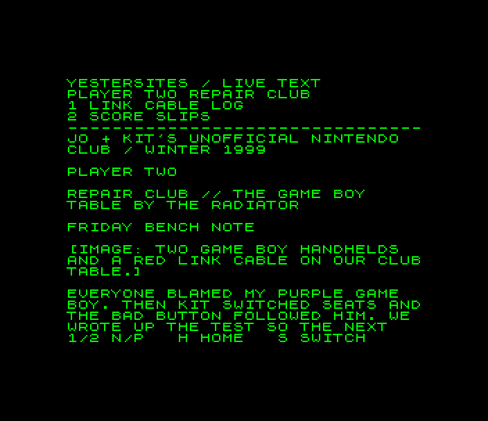
Each ZIP includes a C64 PRG, X16 PRG, Spectrum Next NEX and Spectrum 48K snapshot. Press 1 or 2 to open a page, H for home, or N and P to turn a screen.
Moon Relay machine files · Player Two machine files
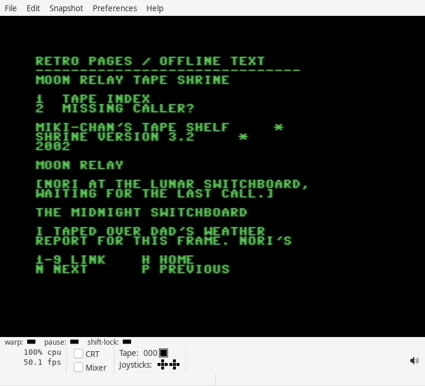
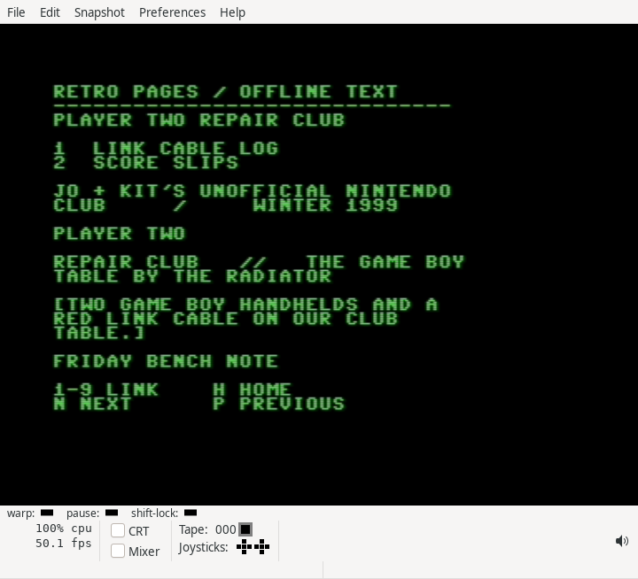
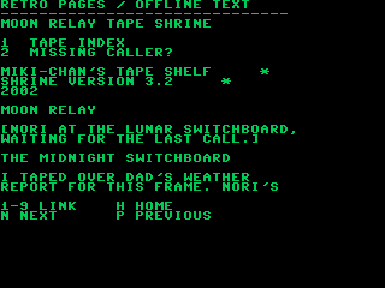
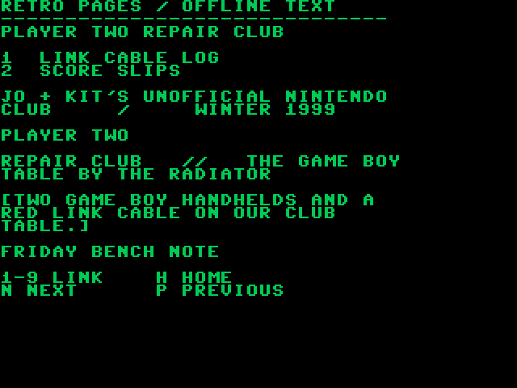


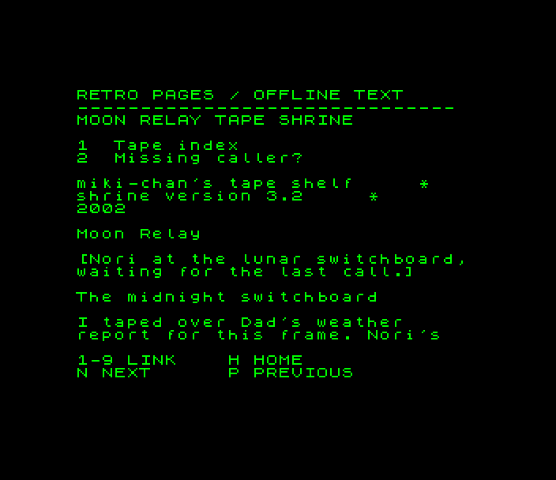
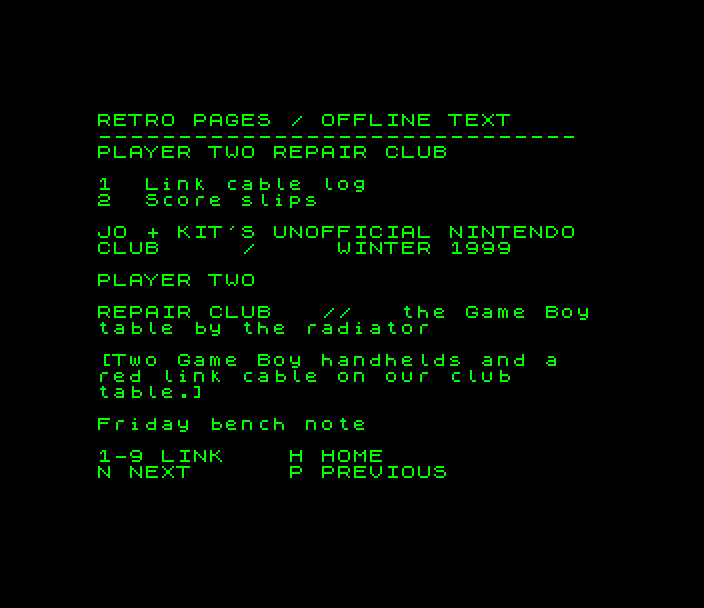